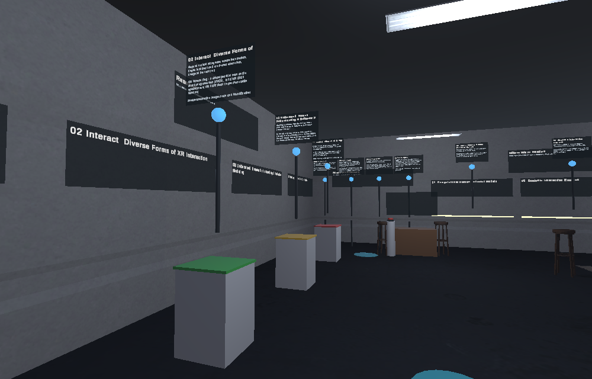

Lobby 로비
연구실 소개와 조작 방법, 그리고 대화 저장에 대한 안내가 있습니다. 에이전트가 맞이합니다.
What the lab is, how to move, and a notice about what happens to your conversation. The hosts wait here.
가상 연구실이 열려 있습니다.
No installation. Use mouse and keyboard on a desktop, or controllers in an XR headset browser — it is the same space either way. A guide agent inside will talk with you.
설치가 필요 없습니다. 데스크톱에서는 마우스와 키보드로, XR 헤드셋 브라우저에서는 컨트롤러로 같은 공간을 체험합니다. 공간 안의 안내 에이전트에게 말을 걸 수 있습니다.
Checking the space address… 공간 주소를 확인하는 중입니다…
| Desktop 데스크톱 | XR headset XR 헤드셋 | |
|---|---|---|
| Move이동 | WASD or arrow keys, Shift to run 방향키, Shift 달리기 | Push the right stick forward, aim, release to teleport 오른쪽 스틱으로 순간이동 지점 선택 후 놓기 |
| Look시점 | Drag empty space, or drag with the right mouse button 빈 곳 드래그 또는 오른쪽 버튼 드래그 | Turn your head; flick the stick left/right to snap-turn 45° 고개 돌리기, 스틱 좌우로 45° 회전 |
| Select · manipulate선택 · 조작 | Click to select, hold and move to grab, wheel to push and pull 클릭 선택, 누른 채 이동해 잡기, 휠로 밀고 당기기 | Trigger to select, trigger or grip to grab, or grab directly up close 트리거 선택, 트리거·그립으로 잡기, 가까이서 직접 잡기 |
| Talk대화 | Click the agent or step closer, type and press Enter; hold V to speak 에이전트 클릭 후 입력, V를 누르고 말하기 | Press a suggested question under the speech bubble, or hold B/Y to speak 추천 질문 버튼, 또는 B/Y를 누르고 말하기 |
The space is laid out as a tour of the lab: you enter at the lobby, walk the research wing, read where the lab is headed, and end at the admissions and collaboration corners.
로비에서 시작해 연구 전시 구역, 앞으로의 방향, 입학 상담과 협력 코너로 이어지는 하나의 동선으로 구성했습니다.
연구실 소개와 조작 방법, 그리고 대화 저장에 대한 안내가 있습니다. 에이전트가 맞이합니다.
What the lab is, how to move, and a notice about what happens to your conversation. The hosts wait here.
01 Foundation · 02 Interact · 03 Understand · 04 Deploy 네 개의 전시대. 기둥의 점을 누르면 대표 연구와 논문이 펼쳐집니다.
Four exhibits along the wall. Click the point on each plinth for the projects and papers behind it.
행동 모델 · 상호작용 엔진 · XR-AI 인프라, 세 층위를 잇는 다음 단계를 보여 줍니다.
The three layers the lab is joining into one system that thinks, adapts and acts.
연구실에 합류하고 싶은 분을 위한 코너입니다. 누가 지원할 수 있는지, 무엇을 준비하면 되는지, 일정은 어떻게 되는지 세 가지 안내판이 있고, 상담 데스크에서 바로 질문을 남길 수 있습니다.
For people who want to join: who can apply, what to prepare, and how the timeline works — plus an advising desk where your question reaches the lab directly.
협력 기관과 합류 안내, 그리고 메시지 데스크가 있습니다. 버튼을 누르고 말을 남기면 대화와 함께 연구실에 전달됩니다.
Who the lab works with, who it is looking for, and a message desk: press the button, say your piece, and it reaches the lab with the conversation.
Hyeongil은 질문에 답하고 해당 구역까지 함께 걸어가 가리키며 설명합니다. Jake는 따라다니고, 앉고, 공을 물어옵니다.
Hyeongil answers questions and walks you to the matching zone, pointing as he explains — with voice, lip sync and gaze. Jake follows, sits, and fetches.
잡아 옮기기, 물리 버튼, 색을 맞춰 전시를 복원하기 — 3DUI 수업에서 다루는 상호작용입니다.
Grab and carry, press a physical button, and restore the exhibit by colour — the vocabulary taught in the lab's 3D User Interfaces course.

| Engine · platform | Unity 6 (URP) + WebXR Export, WebGL build |
|---|---|
| Agent | Dialogue by OpenAI GPT, speech by ElevenLabs. API keys are kept on the lab server only. API 키는 연구실 서버에만 보관합니다. |
| Conversations | Kept on the lab's own server with an anonymous session id, so the lab can read questions and messages left for it. 대화는 익명 세션 id와 함께 연구실 서버에 보관됩니다. |
| Avatar | 3D avatar created with Avaturn, modified (re-rigged and animated for Unity WebXR) |
| Animation | Mixamo (Adobe) |
| 3D assets | Sci-Fi Office (Unity Asset Store), RSG Dogs Pack (Unity Asset Store) |
| Fonts | Noto Sans KR (SIL Open Font License 1.1), Pretendard |